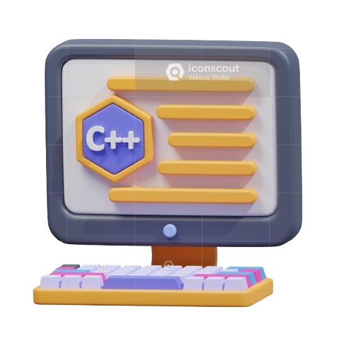

What is C++ ?
what is c++ give 50 line paragraph C++ is a powerful and widely-used programming language that was developed by Bjarne Stroustrup at Bell Labs in the early 1980s. It is an extension of the C programming language, incorporating object-oriented programming (OOP) features and other enhancements, which make it a versatile choice for various applications. C++ supports both high-level and low-level programming, allowing developers to write efficient and performant code. One of the key features of C++ is its support for classes and objects, which enables the creation of reusable code and abstraction. In addition to OOP, C++ also supports procedural and generic programming paradigms, providing developers with a wide range of tools to solve complex problems.
What is the feature of C++ ?
-
Object-Oriented Programming (OOP):
C++ supports OOP principles such as encapsulation, inheritance, and polymorphism, allowing for modular, reusable, and maintainable code.
-
Standard Template Library (STL):
The STL provides a rich set of template classes and functions for common data structures (like vectors, lists, queues) and algorithms (like sorting and searching).
-
Low-Level Manipulation:
C++ allows direct manipulation of hardware and memory through pointers and references, offering fine-grained control over resource management.
-
Efficient Memory Management:
Features like manual memory allocation (using new and delete) enable efficient memory usage and performance optimization.
Basic Syntax Of C++
#include // Include the standard input-output stream library
int main() {
std::cout << "Hello, World!" << std::endl; // Print "Hello, World!" to the console
return 0; // Indicate that the program ended successfully
}
DataTypes In C++
C++ supports a variety of data types, allowing developers to store and manipulate different kinds of data. Here are the primary data types in C++:
Integer Types
- int: A basic integer type.
- short: A shorter integer type, typically half the size of int.
- long: A longer integer type, typically larger than int.
- long long: An extended integer type, larger than long.
- unsigned: Modifier to declare unsigned versions of the above integer types, allowing only non-negative values.
Code For Integer Data Types
int age = 25; short shortVar = 10; long longVar = 1234567890; unsigned int uAge = 30;-
Floating-Point Types
- float: A single-precision floating-point type
- double: A double-precision floating-point type, providing more precision than float
- long double: An extended precision floating-point type, providing even more precision than double
Code For Floating-Point Data Types
float height = 5.9f; double weight = 70.5; long double distance = 1234567.89; -
Character Types
- char: A character type, typically representing a single byte.
- wchar_t: A wide character type for larger character sets (e.g., Unicode).
- char16_t: A 16-bit character type for UTF-16 encoding.
- char32_t: A 32-bit character type for UTF-32 encoding
Code For Character Data Types
char grade = 'A'; wchar_t wChar = L'Ω'; char16_t char16 = u'あ'; char32_t char32 = U'𠀀'; Derived Data Types
Arrays
- A collection of elements of the same type, stored in contiguous memory locations.
Code Part For Array
int numbers[5] = {1, 2, 3, 4, 5};-
Pointers
- Variables that store memory addresses of other variables.
Code Part For
Pointersint a = 10; int* ptr = &a; // Pointer to an integer variable -
References
- Alternative names for existing variables.
Code Part For References
int b = 20; int& ref = b; // Reference to an integer variable -
Function
- Blocks of code that perform specific tasks and can return values.
Code For Function
int add(int x, int y) { return x + y; } -
User-Defined Data Types
-
Structures (struct)
- User-defined types that group variables of different types.
Code For Structures
struct Person { std::string name; int age; };
-
Classes (class)
- User-defined types with data members and member functions, supporting encapsulation and other OOP principles.
Code Part For Classes
class Car {
public:
std::string model;
int year;
void display() {
std::cout << "Model: " << model << ", Year: " << year << std::endl;
}
};
Enumerations (enum)
- User-defined types representing a collection of named integer constants.
Code Part For Enumerations
enum Color {
RED,
GREEN,
BLUE
};
Arrays
Arrays in C++ are collections of elements of the same type, stored in contiguous memory locations. They are useful for storing multiple values in a single variable, making it easier to manage and process data. Here's a detailed overview of arrays in C++
Declaring and Initializing Arrays
-
Single-Dimensional Arrays
- Declaration: Specify the type of elements and the size of the array.
- Initialization: Provide initial values for the elements.
Code Part For Single-Dimensional Arrays
int numbers[5]; // Declaration of an array of 5 integers int values[5] = {1, 2, 3, 4, 5}; // Declaration and initialization -
Accessing Array Elements
- Use the index operator [] to access elements by their position.
Code Part For Accessing Array Elements
numbers[0] = 10; // Assign value to the first element int firstValue = values[0]; // Access the first element -
Multidimensional Arrays
- Arrays with more than one dimension, like matrices.
Code Part For Multidimensional Arrays
int matrix[3][3] = { // Declaration and initialization of a 3x3 array {1, 2, 3}, {4, 5, 6}, {7, 8, 9} };